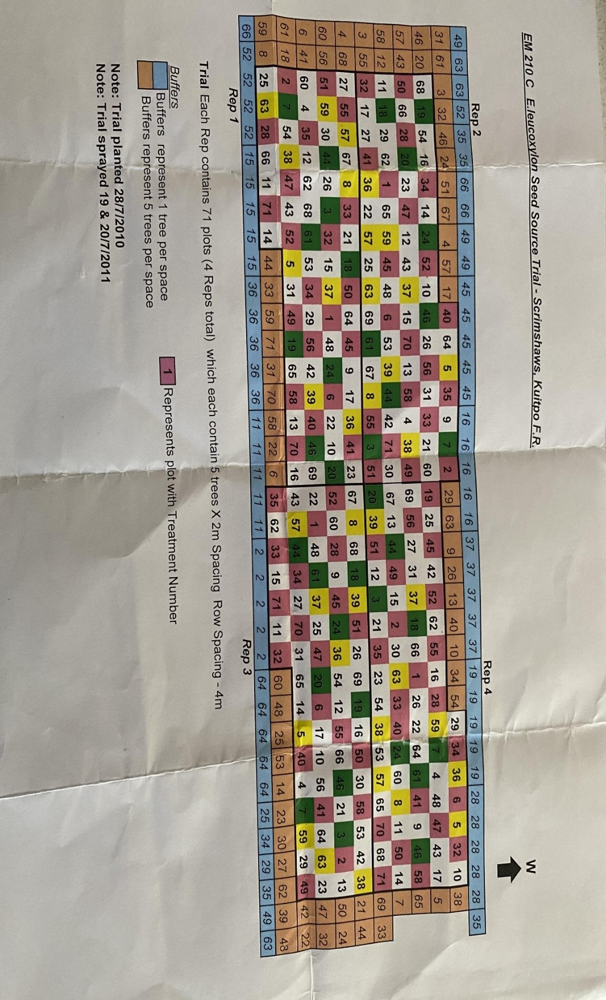

Scrimshaw's plantation
- Plantation History A Trial plantation of E.leucoxylon planted in 2010.
There are SA Blue gums from different provinces, some of these trees, initially in the buffer zones need to be thinned out methodically.
Please see plantation layout map:  - Contact Person
Paul Markou – 0488 017 977
Mike – 0438 568 328
Please text the day before planning to visit the plantation.
Then text on day of arrival to plantation and then again when job is completed, and you are leaving. Please ensure gate is locked properly.
Please contact the day before cutting and then again when leaving the property. - Location Ford Rd, Ashbourne
Enter via gate using SA Forestry key
{kind=link}
Eucalypt Species
- E.leucoxylon, SA Blue gum
Fire Safety Zone
- Strathalbyn
- Goolwa
- Langhorne Creek
- Mount Compass
- Meadows
Seasonal Influences
Being a SA Blue gum plantation, cutting is best on cooler days and seasons.
Ground is sandy, but if a wet season, please do not enter until ground has dried out.
Safety Issues and Hazards
Snakes, ants, tripping hazards
Cutting techniques
The Scrimshaw plantation is a new area that we are trail cutting for the next 6 months
from January 2022 to assist thinning out a PIRSA (Department of Primary Industries
and Regions of South Australia.
Using the above plot map, we can initially start in the blue squares on the eastern side.
Taking out any gums that are struggling and pollarding or taking back to ground level the
larger gums. A trial of both forms of cutting will be carried out.
Maintenance Requirements Overview
Larger tree trunks can be cut into large pieces that can be piled
up in the centre of every second row. Straggly offcuts can also be piled
up in every second row separately to the heavier firewood.